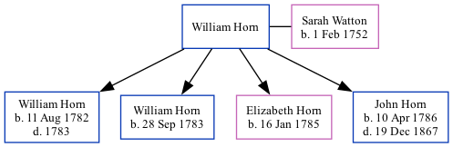

William Horn
[ Home ] | [ Calendar ] | [ Surnames Index ] | [ Family History ]William Horn was the 4 times great-grandfather of <a href="I1.html">Nigel Horne</a> and married Sarah Watton (with whom he had 4 children: <a href="I1945.html">William</a>, <a href="I1946.html">William</a>, <a href="I1947.html">Elizabeth</a> and <a href="I200.html">John</a>) at St John the Baptist's Church, Margate, Kent, England on Jul 2, 1781<span class="citation">1</span>.
Children
- William was born on Aug 11, 1782
- William was born on Sep 28, 1783
- Elizabeth was born on Jan 16, 1785
- John was born on Apr 10, 1786
Citations
- England Marriages 1538-1973 - Findmypast
Media
Canterbury Marriages Transcription - GBPRS-CANT-M-97111630-2
England Marriages 1538-1973 - R_847892465
England Marriages 1538-1973 - R_848617036
Kent, Canterbury Archdeaconry burials - GBPRS/CANT/D/95091757
Kent, Canterbury Archdeaconry marriages - GBPRS/CANT/M/97111630/1
Kent marriages and banns - GBPRS/CANT/M/97118789/1
Family Tree
Generated by Ged2Site. Last updated on Jul 20, 2025